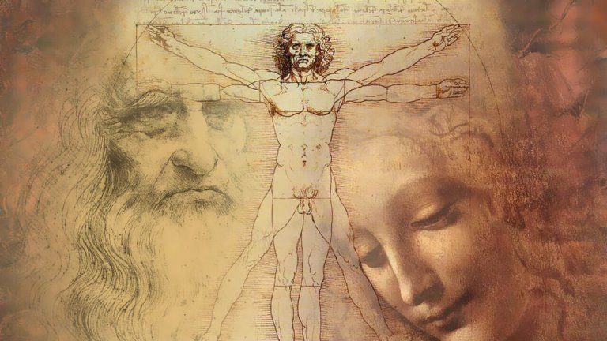
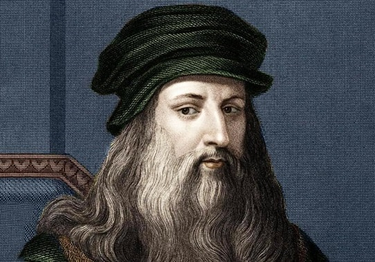
1452 - 1519
Найбільший обман, через який страждають люди, - це їхня власна думка"
Талановитий Леонардо да Вінчи народився у 1542 році. Його матір’ю була проста сільська дівчина Катерина, яка мала близькі відносини з заможним чоловіком П’єро да Вінчі. Через деякі соціальні та матеріальні протиріччя, молода пара не змогла офіційно побратися. Незважаючи на це, батько Леонардо піклувався своїм сином та допоміг йому знайти себе у житті. Багато часу Леонардо присвячував навчанню. Завдяки допомозі батька, молодий да Вінчі мав змогу навчатися у тосканського митця Андреа Вероккьо. Юнак був достатньо тямущим та талановитим хлопцем. Окрім живопису та скульптури, Леонардо також вивчав гуманітарні науки, майстерність вичинки шкіри, основи роботи з металом та хімічними реактивами. Всі ці набуті знання Леонардо використовував у його подальшому житті та творчості. У двадцять років да Вінчі отримав підтвердження кваліфікації майстра.
Хронологія картин
- "Благовіщення" (1472-5) Вважається одною з ранішних картин Леонардо да Винчі.
- "Мадонна з гвоздикою" (1473)
- "Портрет Джиневри де Бенчі" (1474-6)
- "Хрещення Христа" (1475-1478)
- "Мадонна Бенуа" (1478-1482).
- "Мадонна в скелях" (1483-6) и друга версія картини (1494-1508)
- "Портрет музиканта" (1485)
- "Пані з горностаєм" (1488-1490)
- "Прекрасна Ферроньєра" (1490-1495)
- "Мадонна Літта" (1490)
- "Таємна вечеря" (1494-1498)
- "Портрет Ізабелли д'Есте" (1500)
- "Мадонна з веретеном" (1501)
- "Мона Ліза" (1503-1514)
- "Іоанн Хреститель" (1508-1513)
- "Скапільята" (1508)
- "Свята Анна, Мадонна з немовлям і ягням" (1510-1513)
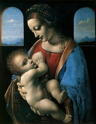
Список живописних картин(деталі)
Список живописних картин да Винчі на сайті Википедія
Виставка картин у Луврі
24 жовтня 2019 року Лувр відкрив для відвідувачів музею найбільшу в історії виставку, присвячену працям видатного Леонардо да Вінчі. Експонати бути зібрані з різних куточків світу та привезені до Парижа спеціально для відкриття цієї виставки. Поціновувачі мистецтва називають відкриття цієї виставки – одною з найбільш значущих подій у житті Лувра за останні 10 років. З дня відкриття виставки Лувр став домівкою для 5-ти полотен та 22-х малюнків величного да Вінчі. Також у виставці представлено 160 робіт, у тому числі 11 картин та понад 70 малюнків, мануфактур, скульптур та предметів мистецтва. Лувр вважається єдиним музеєм, який зберігає найбільшу кількість шедеврів талановитого Леонардо да Вінчі.
Цікава стаття про цю виставку
Відомі картини митця
1. "Мона Ліза" ("Джокконда")
італ. Ritratto di Monna Lisa del Giocondo
італ. Ritratto di Monna Lisa del Giocondo
Найвідоміша картина легендарного Леонардо була написана у 1515 році. Більшість мистецтвознавців вважають, що на картині намальована Ліза Герардіні – кохана дружина продавця шовку – Франческо дель Джокондо. На полотні бачимо жінку в темному одязі, що сидить у кріслі, склавши свої руки разом.
Портрет Мони Лізи можна назвати чудовим прикладом портретного жанру Високого Ренесансу. Посмішка цієї жінки увійшла в історію як найбільша загадка цієї картини.
2. Таємна вечеря
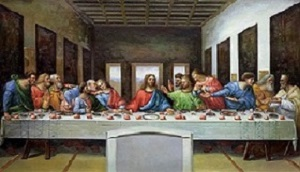
Всесвітньо відома фреска була створена художником у 1494—1498 роках у домініканському монастирі Святої Марії в Мілані. Розміри фрески — приблизно 460×880 см. На ній зображено останню трапезу Ісуса зі своїми учнями.
Розпис був замовлений Леонардо герцогом Лодовіко Сфорца та його дружиною Беатріче д'Есте. Робота над цим шедевром тривала з перервами майже чотири роки. Леонардо використав своєрідну техніку, поєднуючи олію з темперою. Водночас відмовився виконувати роботу у класичній техніці вологої штуркатурки, що й подовжило час виготовлення фрески. "Таємна вечеря" є однією з найскладніших, з психологічної композиції, робіт автора.
3. Благовіщення
італ. Annunciazione 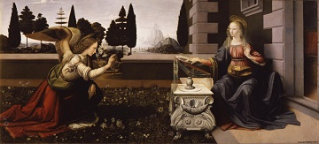
італ. Annunciazione 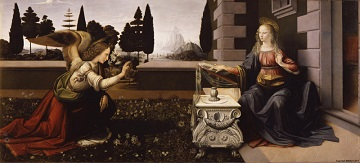
Одна з перших робіт талановитого да Вінчі, створена ним приблизно в 1472 - 1475 роках. В цей час Леонардо був ще учнем.
Картина зображує, як архангел Гавриїл сповіщає Марію про народження її сина Ісуса. На передньому плані ми бачимо архангела Гавриїла, який тримає білу лілію в лівій руці, а правою – він дає благословення Марії, яка сидить біля свого будинку.
4. Хрещення Христа
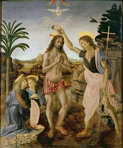
Рання картина художника, написана з допомогою його вчителя А.Веррокьо в 1475 році. Картина була створена для бенедиктинського монастиря. На даний час картина знаходиться у галереї Уффіці у Флоренції. У центрі картини розміщено Ісуса Христа, який приготував свої долоні для молитви. Праворуч стоїть Іоанн Хреститель з жезлом-посохом у виді довгого тонкого хреста. Більша частина картини була написана, звичайно, його вчителем Вероккьо.
Леонардо написав ангела зі світлим волоссям на передньому плані. Також сучасники приписують до рук да Вінчі частину краєвиду на задньому плані. Хоча Леонардо був юний, він багато уваги приділяв композиції та прислухався до порад свого вчителя. Саме завдяки молодому да Вінчі ця картина має таку популярність.
Галерея

"Свята Анна, Мадонна з
немовлям і ягням"
немовлям і ягням"
"Мадонна Літта"
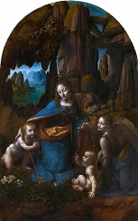
"Мадонна в скелях"
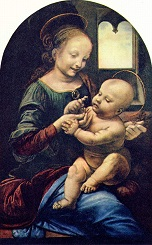
"Мадонна Бенуа" або
"Мадонна з квіткою"
"Мадонна з квіткою"
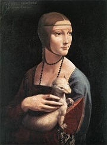
"Пані з горностаєм"
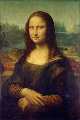
"Мона Ліза"
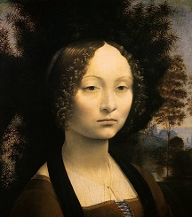
"Портрет Джиневри де Бенчі"
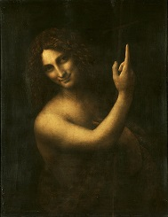
"Іоанн Хреститель"
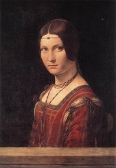
"Прекрасна Ферроньєра"
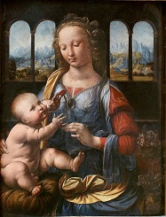
"Мадонна з гвоздикою"
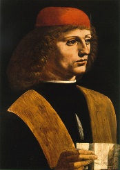
"Портрет музиканта"
Пізнавальні відео
Цей сайт створювався з великою любов'ю до видатного художника Леонардо да Вінчі. Тут зібрано важливі дані про його життя та твори. Сподіваюся, Ви знайдете багато корисного для себе.
Власник та творець сайту Абрамська Олена